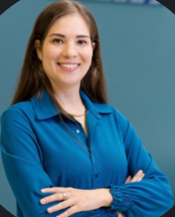

Tecnologia em Análise e Desenvolvimento de Sistemas
IFSC - Instituto Federal de Santa Catarina (Câmpus Gaspar)
2026 - em andamento

Sou acadêmica de Análise e Desenvolvimento de Sistemas no IFSC-Gaspar e atuo na área de Qualidade e Testes de Software desde 2022.
IFSC - Instituto Federal de Santa Catarina (Câmpus Gaspar)
2026 - em andamento
Unicesumar
2022 - 2023 (cursado parcialmente)
Uma primeira etapa na área de tecnologia, que trouxe a base para a minha atuação em Qualidade de Software e a decisão de seguir nessa formação.
FURB - Universidade Regional de Blumenau
2013 - 2017 (concluído)
Setembro de 2024 - atual
Atuo em projetos regulatórios do setor financeiro, hoje na Reforma Tributária (DeRE). Faço validação massiva de dados com Python, Pandas e Databricks, testes de APIs e automação com Playwright em pipelines de CI/CD.
Junho de 2022 - setembro de 2024
Testes no Tasy, sistema crítico da área da saúde. Fiz testes de integração e de APIs (JSON e HL7) e automação com Robot Framework, Playwright e Selenium, com pipelines no Jenkins.
Janeiro de 2022 - junho de 2022
Meu primeiro passo na tecnologia: execução de testes manuais, apoio em testes de integração com HL7 e primeiros contatos com automação em Robot Framework.
Setembro de 2019 - janeiro de 2022
Atuação em microbiologia clínica e coordenação do plantão noturno. Usei os sistemas Matrix e Tasy para registro, validação e liberação de resultados críticos.
Setembro de 2017 - outubro de 2019
Fui de recepcionista a biomédica com cargo de confiança junto à gestão. Cuidei dos documentos da qualidade para auditorias (PNCQ) e do controle de equipamentos.
Julho de 2016 - setembro de 2017
Início da trajetória durante a graduação, com atendimento a pacientes e apoio à rotina de coleta.
Proway
2024 - 2025
| Horário | Segunda | Terça | Quarta | Quinta | Sexta |
|---|---|---|---|---|---|
| 9h às 18h | Trabalho remoto - BIP Brasil (cliente Stone) | ||||
| 18h30 às 22h30 | Banco de Dados I | Programação Estruturada | Engenharia de Software I | Programação para Internet | Livre |